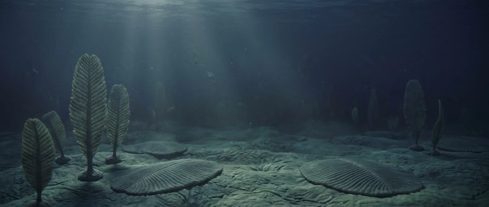
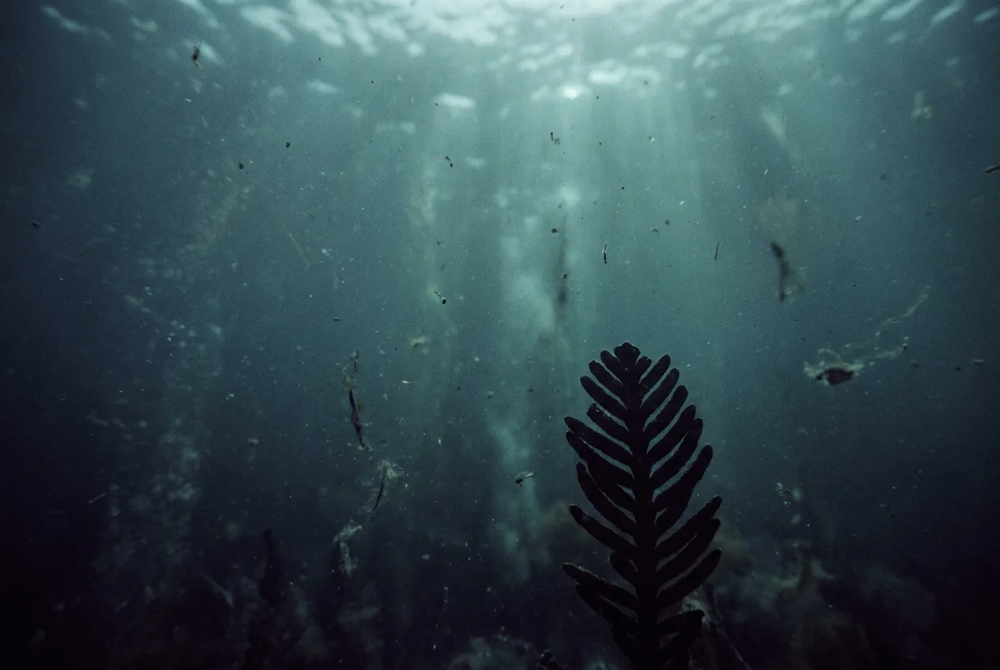
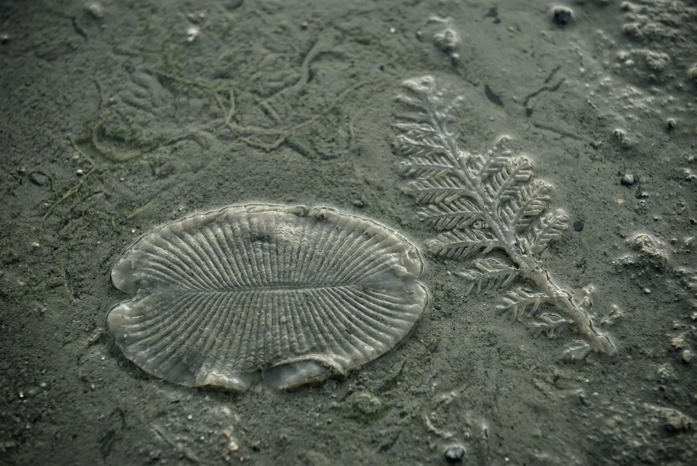

Immediately after the last Snowball melts, the sea floor fills with large soft bodies: fronds, discs, quilted mats up to a metre across. Nothing has a mouth, a gut, an eye or a skeleton. It is the only chapter of animal life with no predation in it.
The first interval where the number is a range rather than a certainty, because the oxygen estimate is a range. At the high end you get an hour of severe altitude sickness. At the low end you get the Proterozoic answer.

Scale 0–40%. The Neoproterozoic Oxygenation Event is underway. Even the optimistic end of this range is thinner than the summit of Everest.
Scale 0–24 h. Measured, not modelled: tidal rhythmites from the Elatina Formation in South Australia preserve individual tides, and the count gives about 400 days per year.
Scale 0–30 m. After three billion years of microbes, bodies you can see without a lens appear in the space of a few million.
Almost no mouths, guts or eyes, and very little burrowing. The exception matters: the tube-dwelling Cloudina built a mineralised skeleton late in the period, and some of those tubes carry bore holes that look like the earliest predation on record. Large-bodied predation is absent or close to it, which is the strongest argument that most of this predates the arms race.
Possibly microbial crusts on damp rock. Everything on this page happens underwater; the land is sterile stone.
Forming as oxygen rises, and one of the reasons life is still confined to water: a few metres of sea absorbs the UV that the atmosphere cannot.

The first air on this site that does anything for you at all. At the optimistic end of the estimates it is roughly what a climber meets above 8,000 metres, in the zone where the body deteriorates continuously and no amount of rest recovers it.
Breathing hard flushes CO₂ out of your blood without bringing enough O₂ in. That drives blood alkaline, which makes haemoglobin hold its oxygen more tightly instead of releasing it. Trying harder actively works against you.
Peripheral vision goes first, then fine motor control, then the ability to recognise that either has happened.
The wide bracket is honest. Where in it you land depends entirely on which oxygen estimate is right, and that is a live argument in the literature rather than a settled figure.
With bottled air, the Ediacaran is the strangest place on this site and the safest of the first four.

Present, insufficient. Everything else here is fine.
Warm shallow seas, recovering from the Marinoan glaciation. Fresh water on land, unfiltered by anything living.
Soft, mostly water, and of completely unknown chemistry. Some Ediacarans may be fungi or lichen-grade organisms rather than animals.
No. Below roughly 16% oxygen a flame will not sustain itself, and there is nothing dry to burn anyway.
Sedimentary rock, sand, clay. Buildable, if pointlessly.
None. This is the only entry on the site where nothing living has any capacity to harm you.